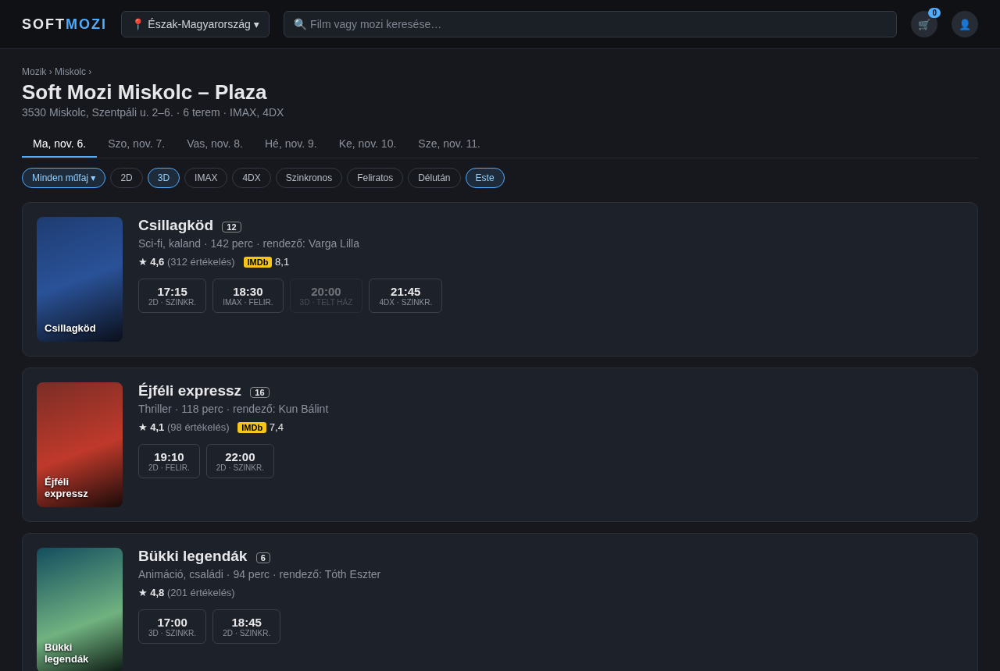
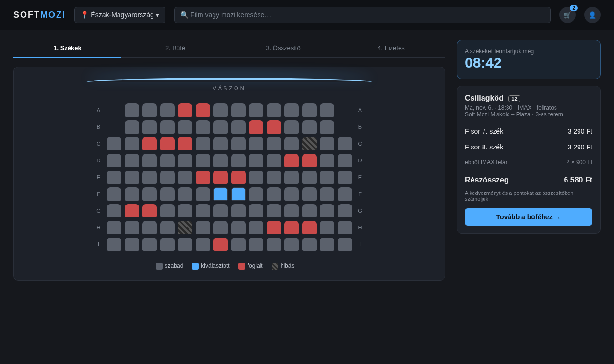
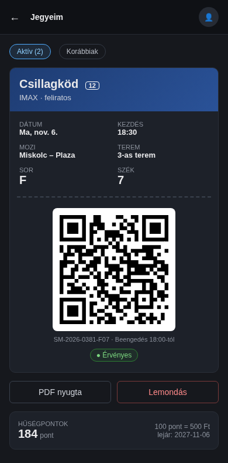
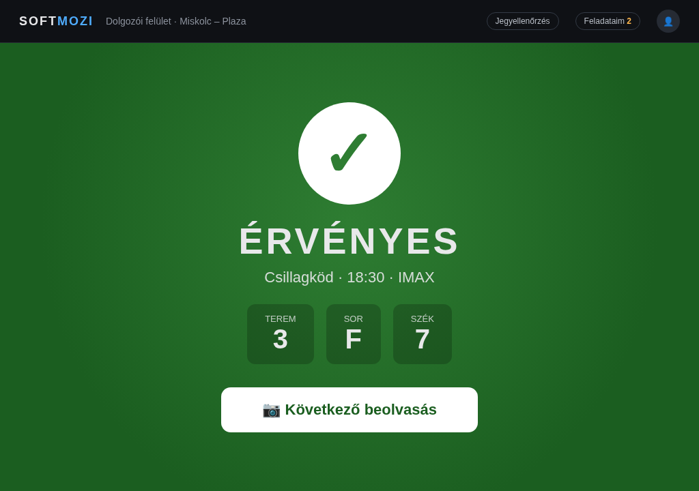
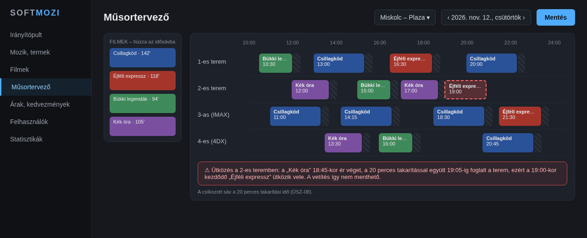

Csoport neve: Fü(r)ge Soft
Feladat címe: Soft Mozi
Felhasználói Kézikönyv
Gyakorlatvezető:
Árvai László
Csoport tagok:
| Padányi Milán | FMUL84 | mpadanyi09@gmail.com |
| Ujfalussy Kristóf | ZZORDN | kristof.ujfalussy@student.uni-miskolc.hu |
| Kecskés Gábor | QDY6TL | gabor.kecskes@student.uni-miskolc.hu |
| Lengyel János | N9XZKQ | lengyeljanos2004@gmail.com |
| Laczkó Norbert | SLIIKD | laczkonorbert4@gmail.com |
2026-11-06
Történet:
| Dátum | Verzió | Leírás | Szerző |
| 2026-11-06 |
0.1 |
Létrejött a dokumentum váza: fejezetek, a vendég, a dolgozó és az admin felület főbb lépései vázlatosan.
A kézikönyv a fejlesztés előrehaladtával, a kész felületek képernyőképeivel bővül. |
Lengyel János |
| 2026-11-06 |
0.2 |
Minta képernyőképek (tervek) hozzáadása: mozi műsora, székválasztás, e-jegy telefonon, jegyellenőrzés a dolgozói tableten, műsortervező. |
Ujfalussy Kristóf
Laczkó Norbert |
Tartalomjegyzék:
Felhasználói Kézikönyv
1. Bevezetés
1.1 Kinek szól a kézikönyv
A kézikönyv a Soft Mozi rendszer mindhárom felhasználói körének szól: a vendégeknek, akik jegyet vesznek,
a dolgozóknak, akik a moziban a jegyeket ellenőrzik és a termeket rendben tartják, és az
adminisztrátoroknak, akik a mozihálózatot kezelik. Mindenkinek elég a saját fejezetét elolvasnia,
valamint az Első lépések részt.
1.2 Rendszerkövetelmények
- Modern böngésző (Chrome, Firefox, Safari, Edge) számítógépen vagy telefonon.
- Internetkapcsolat.
- Dolgozóknak: tablet kamerával (a QR-kód beolvasásához), a böngészőben engedélyezni kell a kamera használatát.
1.3 Szerepkörök
| Szerepkör | Mit tud | Hogyan lesz valaki ilyen |
| Látogató (nincs bejelentkezve) | Mozik, műsor és filmek böngészése. | – |
| Vendég | Jegy- és büfévásárlás, értékelés, profil, hűségpontok. | Regisztrációval. |
| Dolgozó | Jegyellenőrzés, feladatok, székhiba bejelentése a saját moziban. | Az admin állítja be. |
| Admin | A teljes rendszer kezelése. | Az admin állítja be. |
2. Első lépések
2.1 Regisztráció
- Kattintson a jobb felső sarokban a Regisztráció gombra.
- Adja meg a nevét, e-mail címét, jelszavát és születési dátumát.
- Nyissa meg a kapott e-mailt, és kattintson a megerősítő linkre.
TODO: képernyőkép a regisztrációs űrlapról.
2.2 Bejelentkezés és elfelejtett jelszó
Bejelentkezni e-mail címmel és jelszóval lehet. Bejelentkezés után a rendszer a szerepkörének megfelelő kezdőlapra viszi.
Ha elfelejtette a jelszavát, kattintson az Elfelejtett jelszó linkre, és kövesse az e-mailben kapott utasításokat.
TODO: képernyőkép.
2.3 Profil és kedvezmények
A
Profil oldalon módosíthatja a nevét, telefonszámát és profilképét, valamint beállíthatja a kedvezményét
(diák, nyugdíjas, gyerek). A kedvezmény feltételei:
- Diák: 26 éves korig, diákigazolvánnyal (a belépésnél ellenőrizhetik).
- Gyerek: 14 év alatt. Nyugdíjas: 65 év felett (a születési dátum alapján).
Itt lehet a fiókot is törölni. Ilyenkor a személyes adatai törlődnek.
3. Vendégeknek
3.1 Mozi és film keresése
Válasszon régiót a felső menüben, majd egy mozit. A mozi oldalán a napi műsor látszik, amit műfaj, technológia (2D, 3D, IMAX, 4DX),
nyelv és napszak szerint szűrhet. Egy filmre kattintva megnyílik a filmadatlap a leírással, az előzetessel és az értékelésekkel.

2. ábra: Egy mozi napi műsora a szűrőkkel (tervezet, a végleges felület eltérhet)
3.2 Jegyvásárlás lépésről lépésre
flowchart LR
A["Vetítés
kiválasztása"] --> B["1. Székek"]
B --> C["2. Büfé
(nem kötelező)"]
C --> D["3. Összesítő"]
D --> E["4. Fizetés"]
E --> F["E-jegy
e-mailben és
a profilban"]
1. ábra: A jegyvásárlás lépései
- Székek: kattintson a szabad (szürke) székekre, legfeljebb 10-et választhat. A kiválasztott székeket
10 percig fenntartjuk Önnek, a hátralévő idő a jobb felső sarokban látszik.
- Büfé: ha szeretne, tegyen a kosárba üdítőt, popcornt, extrákat.
- Összesítő: ellenőrizze a tételeket. Itt látja a kedvezményt, és itt válthatja be a hűségpontjait.
- Fizetés: a rendszer átirányítja a fizetési oldalra. Sikeres fizetés után megkapja az e-jegyet.
Fontos: ha a 10 perc lejár, a székek felszabadulnak, és elölről kell kezdeni.

3. ábra: Az 1. lépés: székválasztás a teremtérképen, jobb oldalon a hátralévő idő és a kosár (tervezet, a végleges felület eltérhet)
3.3 Jegyeim, lemondás, hűségpontok
- A Jegyeim oldalon látja a megvett jegyeket QR-kóddal. A belépéskor ezt kell felmutatni.
- A jegyet a vetítés előtt legalább 2 órával lemondhatja, ilyenkor a jegy és a büfé ára is visszajár.
- Minden 100 Ft után 1 pont jár, 100 pont = 500 Ft kedvezmény. A pontok 1 évig érvényesek.
- A vásárlásról PDF nyugtát is letölthet.

4. ábra: Az e-jegy QR-kóddal és a hűségpontok telefonon (tervezet, a végleges felület eltérhet)
3.4 Filmek értékelése és AI ajánló
Ha megnézett egy filmet, a filmadatlapon 1-5 csillaggal értékelheti. Az AI ajánló a korábbi vásárlásai és
értékelései alapján javasol filmeket és vetítéseket.
TODO: kidolgozni, amikor az ajánló felülete elkészül.
4. Dolgozóknak
4.1 Jegyellenőrzés
- Nyomja meg a Beolvasás gombot, és tartsa a kamerát a vendég QR-kódja elé.
- Zöld képernyő: a jegy érvényes, a vendég beléphet. A képernyőn látszik a terem, a sor és a szék.
- Piros képernyő: a jegy érvénytelen. Az ok is megjelenik (másik mozi, rossz időpont, már felhasznált).
A beengedés a vetítés előtt 30 perccel kezdődik, és a kezdés után 20 percig tart.

5. ábra: Érvényes jegy beolvasása után a dolgozói tableten (tervezet, a végleges felület eltérhet)
4.2 Takarítási és javítási feladatok
- Új feladatnál hangjelzés szól, és megjelenik egy kártya a Feladataim oldalon.
- Az Elfogadom gombbal vállalja a feladatot, a Rendben gombbal jelzi, hogy végzett.
- Ha egy szék elromlott, a Székhiba bejelentése oldalon válassza ki a termet és a széket. A széket ezután nem lehet eladni,
amíg a szerelő meg nem javítja.
- Ha egy feladatot 15 percig senki nem fogad el, a rendszer mindenkinek és az adminnak is szól.
4.3 Büfé rendelés kiadása
Olvassa be a vendég QR-kódját a Büfé kiadás oldalon. Megjelenik az előre kifizetett rendelés, a kiadás után
nyomja meg a Kiadva gombot.
TODO: kidolgozni (ha marad idő funkció, FK-24).
5. Adminisztrátoroknak
5.1 Régiók, mozik, termek
Az oldalsó menü Mozik pontjában lehet régiókat, mozikat, termeket és a termek székeit felvenni, módosítani, törölni.
TODO: a teremszerkesztő leírása (sorok, székek száma, kihagyott helyek).
5.2 Műsortervezés
- Válassza ki a mozit és a napot. Termenként egy idősáv jelenik meg.
- Húzza a filmet a megfelelő idősávba, adja meg a nyelvet és a technológiát.
- Ha a vetítés ütközik egy másikkal (a 20 perces takarítási időt is beleszámolva), pirosan jelenik meg, és nem menthető.

6. ábra: A műsortervező egy ütköző vetítéssel a 2-es teremben (tervezet, a végleges felület eltérhet)
5.3 Árak és kedvezmények
Itt állíthatók be a büfé árak mozinként, a kedvezmények százalékai és a dinamikus árazás.
A dinamikus ár legfeljebb 30%-kal lehet olcsóbb vagy 25%-kal drágább az alapárnál.
5.4 Felhasználók és jogosultságok
Keresse meg a felhasználót, módosítsa a jogosultságát (vendég, dolgozó, admin), és dolgozónál válassza ki a mozit, ahol dolgozik.
5.5 Statisztikák
Bevétel, eladott jegyek és büfé eladások mozinként és régiónként, grafikonokkal. A táblázat CSV-ként letölthető.
TODO: képernyőkép.
6. Hibaüzenetek és megoldásuk
| Üzenet | Mit jelent | Mit tegyen |
| „Ezt a széket közben valaki más választotta.” | Egy másik vendég gyorsabb volt. | Válasszon másik széket. |
| „Lejárt a foglalási idő.” | Eltelt a 10 perc fizetés nélkül. | Kezdje újra a vásárlást. |
| „Sikertelen fizetés.” | A bank elutasította a fizetést. | Próbálja újra, vagy használjon másik kártyát. |
| „Erre a filmre nem vásárolhat jegyet.” | A korhatár miatt. | – |
| „A munkamenet lejárt.” | Régen jelentkezett be. | Jelentkezzen be újra. |
| „A vetítés ütközik egy másikkal.” (admin) | Ugyanabban a teremben átfedés van. | Válasszon másik időpontot vagy termet. |
7. Gyakori kérdések
- Nem kaptam meg az e-jegyet. Nézze meg a levélszemét mappát. A jegy a profiljában a Jegyeim oldalon is megtalálható.
- Kinyomtassam a jegyet? Nem kell, elég a telefonon felmutatni a QR-kódot.
- Használhatok két kedvezményt egyszerre? Nem, egy jegyre egy kedvezmény jár, de a hűségpontok mellette is beválthatók.
- TODO: bővíteni a tesztelés során felmerülő kérdésekkel.
8. Segítség és kapcsolat
Ha a kézikönyvben nem talál választ, írjon az ügyfélszolgálatnak.
TODO: ügyfélszolgálati elérhetőség.